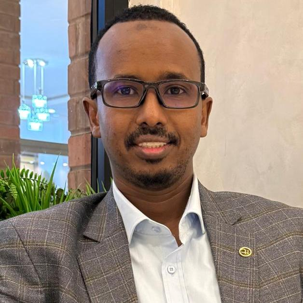

Published dietary diversity research in Maternal & Child Nutrition journal
-Health • Nutrition • Agrifood • Research • Development Leadership
Mohamed Kalid Ali
- PhD in Health and Welfare | Research focus on Undernutrition and food security in children in internally displaced camps + PhD in Health and Welfare. Building evidence-driven nutrition and agrifood solutions for communities in fragile and conflict-affected settings.
+
+
+
10+Years Experience
+ $80MFlagship Climate Project
+ 2,300+Children in Research
+

About Me
@@ -310,66 +316,78 @@
Leading strategic oversight of FAO operations across Puntland and Galmudug regions, providing senior technical advice on agriculture and food security strategy development. Currently managing comprehensive sector portfolio including the flagship Ugbaad climate resilience project ($80M Green Climate Fund), conducting analytical sector work, and leading strategic partnerships with government ministries and international institutions. Extensive experience in portfolio performance reviews, quality assurance processes, and developing Key Performance Indicators (KPIs) for sustainable development outcomes.
Recently Completed
Undernutrition and Food Insecurity Research
Successfully defended thesis "Undernutrition and Food Security in Children in Internally Displaced Persons in Somalia" at the Swedish Embassy in Nairobi. Research spanning 2,300+ children reveals critical insights for interventions.
Key Finding: While many caregivers demonstrated basic nutrition knowledge, poverty, food shortages, caregiving burden, and poor WASH conditions limited their ability to translate knowledge into practice.
Active Research & Publications
Published Research & Data Analysis
-
+
-
-
+
-
-
+
+
+ Dietary Diversity Publication
+Published dietary diversity findings in Maternal & Child Nutrition with field evidence from IDP camp households.
+Analyzing 15 years of Somalia nutrition data revealing seasonal vs. shock patterns
-
+
-
-
+
+
+ Longitudinal Nutrition Analytics
+Analyzing 15 years of Somalia nutrition data to separate seasonal trends from conflict and climate-related shocks.
+Agricultural emissions analysis showing productivity-efficiency correlations
-
+
-
+
+
+
+ Agrifood Efficiency Study
+Conducting agricultural emissions analysis showing the relationship between climate productivity and resource efficiency.
+Vitamin A coverage impact studies demonstrating inverse relationship with malnutrition
-
+
+
Vitamin A Impact Evidence
+Vitamin A coverage impact studies demonstrating an inverse relationship with morbidity and acute malnutrition rates.
+Somalia's First GCF Project
Ugbaad: Transformative Climate Resilience
"Ugbaad" (meaning "hope" in Somali) represents Somalia's first and largest climate finance project approved by the Green Climate Fund.
Duration:
7 Years (2025-2032)
Funding Source:
Green Climate Fund
Budget:
$80M
Focus Areas:
EOF
)